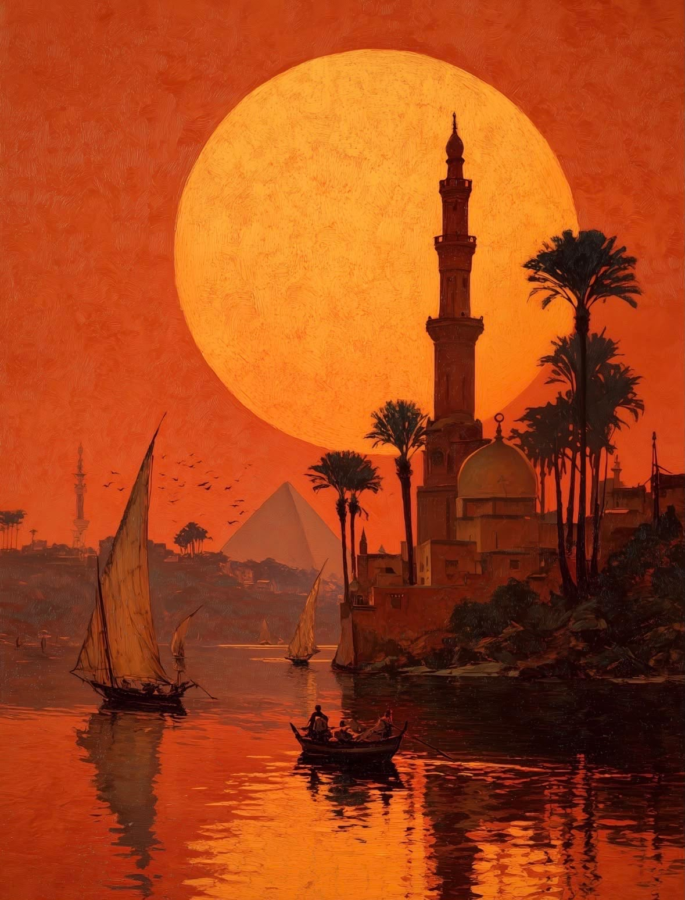

Revista interdisciplinariaEdición especial
El Islam
الإسلام
Religión · Cultura · Sociedad
Una mirada a sus orígenes, creencias, tradiciones y presencia en el mundo actual.
Origen y evoluciónDel siglo VII al mundo actual
Creencias y vida cotidianaLos cinco pilares y el Ramadán
Infografía centralSignos y símbolos del Islam
Una religión que atraviesa culturas
Edición especial
El Islam y su influencia en la sociedad
Revista interdisciplinaria de
Sociología, Religión y Cultura
«Conocer una religión también es una forma de comprender a la sociedad».
No es necesario compartir las creencias de otra persona para comprenderlas y respetarlas.